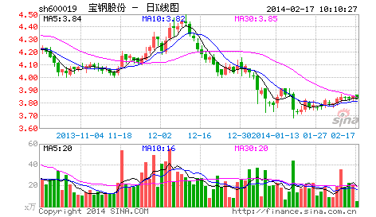

今天不宠幸孔二爷了，宠幸一下股票。早就说过，中国没有人有资格和本ID谈论股票。国庆前，香港有几个大的基金经理过来，吃饭时让本ID给修理了一通，屁颠屁颠回去了。本ID和他们说了大的国际经济趋势以及大中国区的金融前景还有内地的政治经济形势，坚定他们的信心，他们主要是对内地的情况不了解，所以有所狐疑。最近这伙人干得不错，在市场里，干就往死里干，不干白不干。把锅炒热了才有好菜吃，这道理不很简单？
但这几个月还是有点烦，就是整天给一大叔骚扰。他钱不多，也就千万级别的资金规模，这种人本ID从不搭理，但这大叔有点特殊，有些渊源，人家年纪又这么大，40好几了，怎么都给点面子。但有时候，真想踹他两脚。4月份，本ID布局权证时，他就不敢买，后来权证疯了，他就后悔。然后告诉他，年纪大了就不要玩太高风险的，买银行股吧，民生，4块钱附近买了就搁着，结果赚了几毛钱就跑，真没出息。最可气的是，国航跌破发行价时告诉他去买，他自己也当过兵，特别提醒他国航的李总当兵出身的，怎么可能让自己的股票跌破发行价这么没面子？这大叔犹犹豫豫，N天时间也就买了点，长起来几毛钱又走了。最近，让他在3元多吸纳北辰实业，4块不到就跑了，本ID简直对他彻底绝望。不过他还算好，有部分钱在年初3、4块买了一只自己十分熟悉的北京股票，现在已经10块了，但这大叔最麻烦的是，上下一波动就紧张，就打电话来骚扰本ID，本ID教他怎么在箱型盘整时弄短差，这大叔，涨的时候不敢卖，跌的时候不敢买，本ID真服了他。
之所以说这，因为这种情况在散户中太常见。散户就如浮萍，没根，没主意，这样不给屠杀才怪了。大概最近比这大叔更惨的，赚了指数亏了钱的也不在少数，本ID也废话一下，让有缘者得之。去年破1000点前，本ID曾写“G股是G点”，今天5月刚突破后，本ID又写“大牛不用套！”，但为什么有人竟然可以不挣钱？最主要是对牛市没信心，对牛市的节奏没把握。5月份前有色等的上涨，不过是牛市的预热阶段，而目前以金融股等为代表的指数股上涨，是牛市的第一阶段。96年的时候，深发展长了N倍了，很多股票还没怎么动。牛市的第一阶段都是这样的，一线股先长，它们不到位，其他股票怎么长？全世界的牛市都基本这样子，没什么新鲜的。
错过了这个节奏怎么办？如果你跟盘技术还行的，就要在回档的时候跟进强势股票。散户就怕跌，但牛市里，跌就是爹，一跌就等于爹来了，又要发钱了。如果跟盘技术不行，有一种方式是最简单的，就是盯着所有放量突破上市首日最高价的新股以及放量突破年线然后缩量回调年线的老股，这都是以后的黑马。特别那些年线走平后向上出现拐点的股票，一定要看好了。至于还在年线下面的股票，先别看了，等他们上年线再说。其实，这就是在牛市中最简单可靠的找所谓牛股的方法。举一个例子，去看看宝钢，突破年线后缩量回调，10月23日回调4.20元，当时年线就在4.17元，然后再放量启动，今天，11月16日，已经6元多了，50%就这么完成了。从年线上启动，先长个50%，不像玩一样？本ID一般只看大盘股票，小盘股没法进去，但散户可以看小盘股，原则是一样的，不过小盘股可要留意，一般大盘股启动的骗线比较少，小盘股可不一定，这都要自己好好去揣摩。散户就当好散户，别整天想着抄底、逃顶，底都让你抄了，顶都让你逃了，不是散户的人吃什么去呀？散户，一定要等趋势明确才介入或退出，这样会少走很多弯路。
一只股票长起来千万别随意抛了，中线如果连三十天线都没跌破，证明走势很强，就要拿着。当然，如果你水平高一点，在上涨的时候，根据短线指标可以打短差，这样可以增加资金的利用率，但高位抛掉的，只要中线图形没走坏，回挡时一定要买回来，特别那些没出现加速的股票。有一个抛股票的原则，分两种情况，一种是缓慢推升的，一旦出现加速上涨，就要时刻注意出货的机会；另一种是第一波就火暴上涨，调整后第二波的上涨一旦出现背弛或放巨量的，一定要小心，找机会走人。具体的操作是一个火候的问题，必须自己用心去体会，就像煲汤，火候的问题是没法教的，只能自己在实践中体会。还有，对抛弃的股票一定不能有感情，股票就像男人，玩过就扔，千万别有感情。
还有一点必须提醒，在牛市中，一定要严重关注成分股，特别有一定资金规模的，成分股都是大部队在战斗，别整天跟那些散兵游勇玩，那些人自己都自身难保，本ID看这种所谓游资被消灭的都看到麻木了，大资金就爱吃他们，几个亿几个亿吃他们，这才有点意思，否则吃小散户的几万几千，累不累呀？牛市中，最终所有股票都会有表现的机会，只是掌握了节奏，资金的利用率就高，一个牛市下来，挣的钱如果不超出指数最终涨幅的几倍，指数长一倍，不挣个4、5倍，那就算废物点心了。要达到这种水平，其实很简单，就一个原则：避开大的回挡，借回挡踏准轮动节奏。千万别相信什么基本面的忽悠，特别对于散户来说，最多也就一亿几千万的钱，有必要研究什么基本面吗？所谓基本面，只是一个由头，给自己壮胆和忽悠别人用的。对基本面，只要知道别人心目中的基本面以及相应的影响就可以了，自己千万别信。
本ID还是那句话，玩资本主义的游戏就要用资本主义的原则，既然玩股票了，就要心狠手辣，市场从来不同情失败者，市场不需要焚尸炉，失败者的尸体在市场中连影子、味道都不会留下。别给自己的失败找任何理由，失败只能是你自己的失败，失败就找机会扳回来，但前提是必须找到失败的真正原因，否则不过是延续不同的情节、相同的悲剧。希望来本博客的人，除了学《论语》、听音乐、看文章，还都能学会挣钱。这个世界上最无耻下流的就是不会挣钱的人，你说钱是孙子，而你连孙子都搞不掂，那你最多就是龟孙子，有什么资格说话？有钱不是大爷，没钱更不是大爷。在市场挣钱就如同打仗，九死一生，而最终能活着的，就是牛人，牛人就要牛，这又有什么可说的？